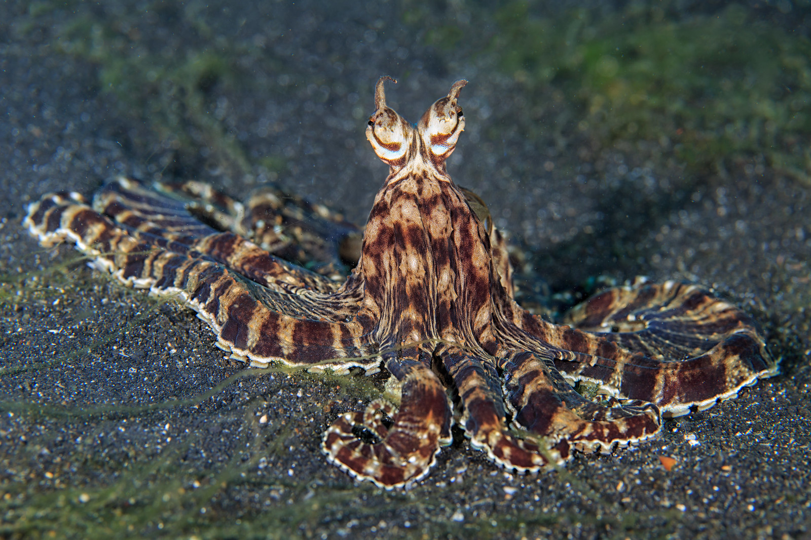

Este pulpo cambia su aspecto y postura para imitar a otras especies y evitar ser encontrado.
Es un cefalópodo de cuerpo blando que se desplaza por el fondo marino con sus ocho brazos. Puede cambiar de forma, coloración y postura con rapidez.
Vive en aguas saladas de océanos y mares tropicales.
¿Cómo se oculta?
Combina camuflaje y mimetismo visual para engañar a sus enemigos o pasar inadvertido. También usa señales para comunicarse con otros de su especie.
Sentidos
